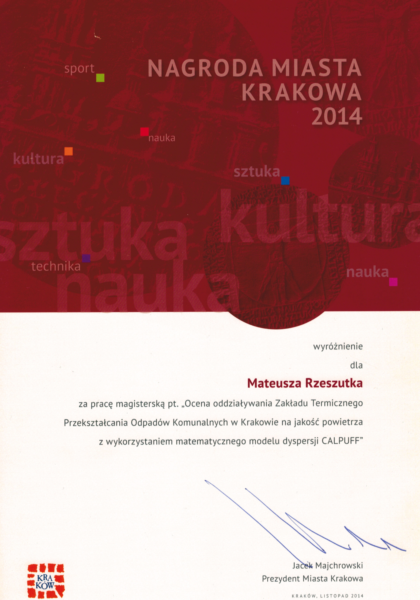
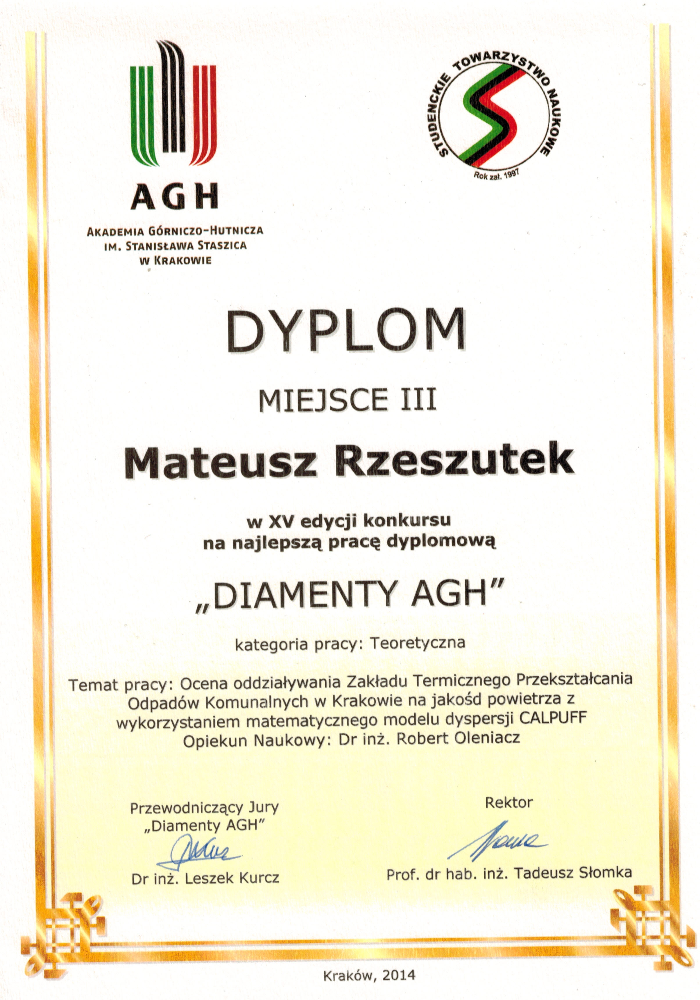
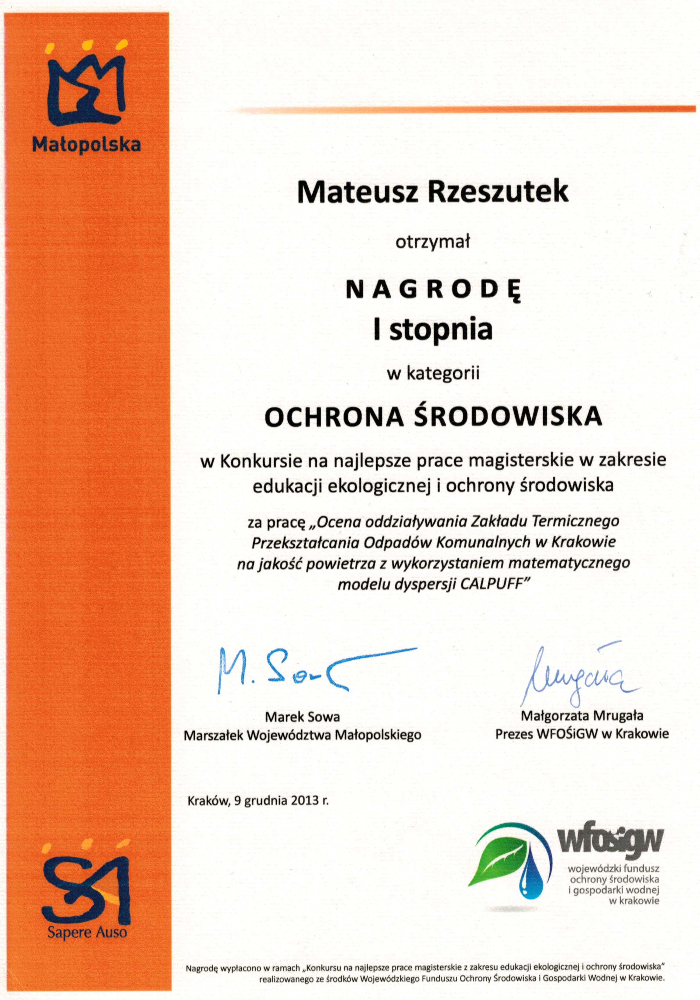
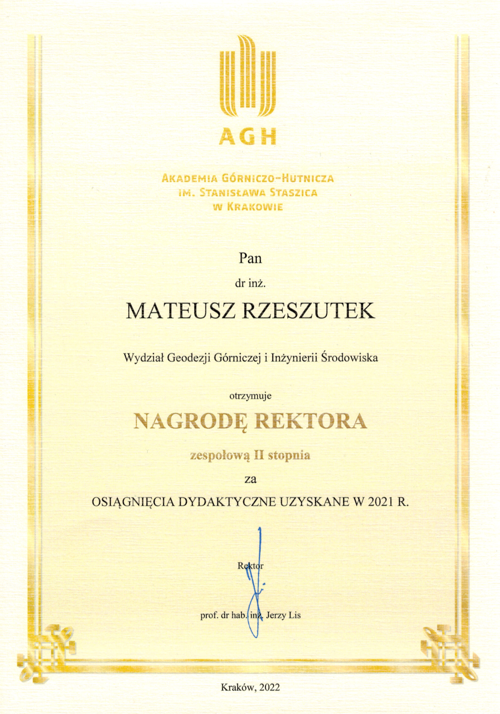
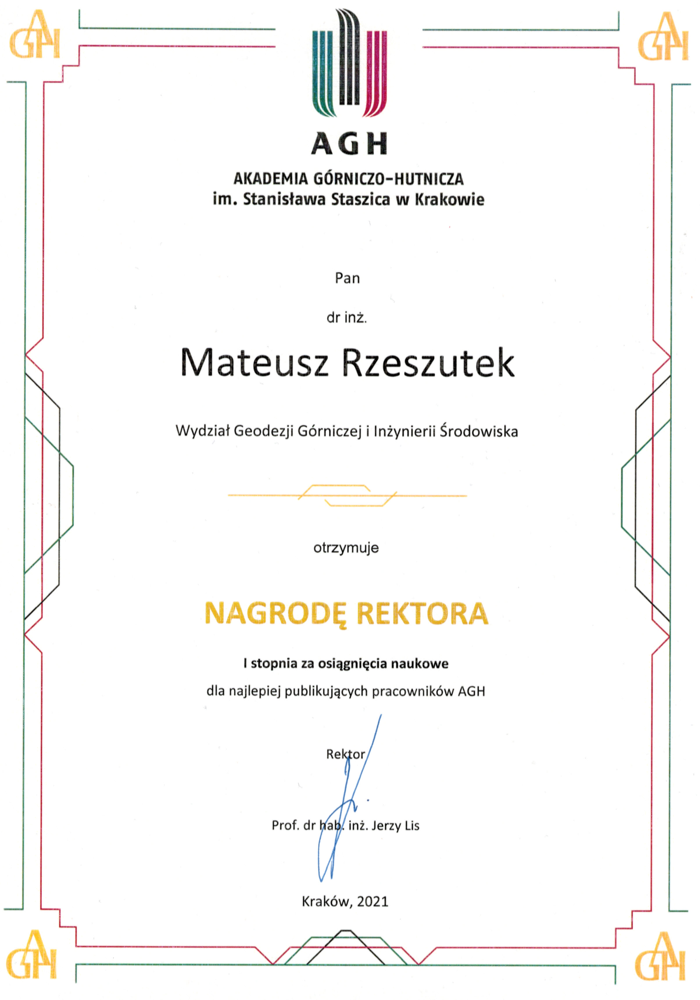
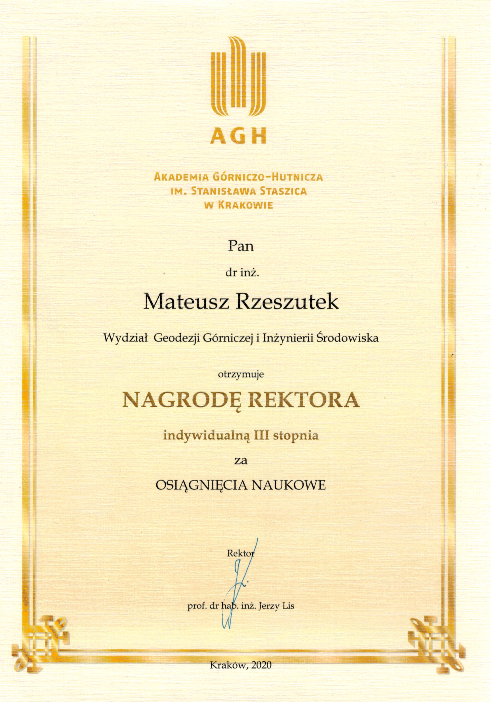
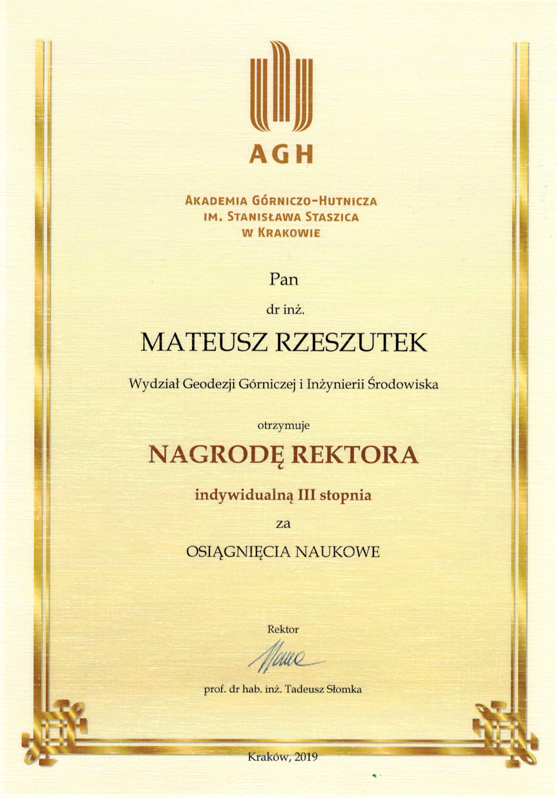
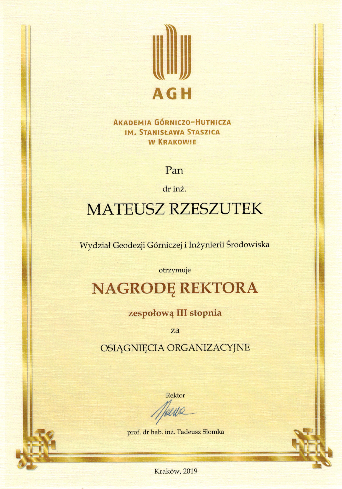
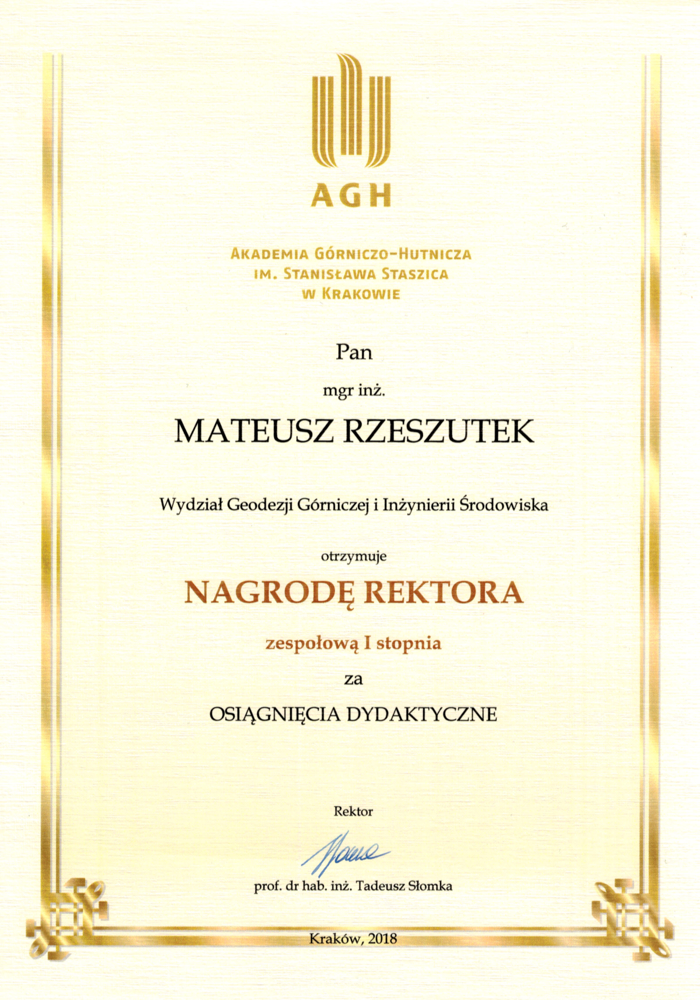

General
KRAKOW CITY AWARDS 2014
Category: Distinctions for diploma theses.
“Air quality impact assessment of Industrial Plant of Thermic Waste Processing Technology in Kracow using mathematical dispersion model CALPUFF.”
Poland, Krakow, November 6, 2014
Press releases

AGH DIAMMENTS - 15th edition
Winner of the 3rd place in the 15th edition of the competition for the best diploma thesis “DIAMENTS AGH”, organized by the AGH Student Scientific Society.
“Air quality impact assessment of Industrial Plant of Thermic Waste Processing Technology in Kracow using mathematical dispersion model CALPUFF.”
Poland, Krakow, March 31, 2014
Press releases

Sapere Auso Foundation
1st prize in the competition for the best master’s theses in the field of ecological education and environmental protection, organized by the SAPERE AUSO Foundation.
“Air quality impact assessment of Industrial Plant of Thermic Waste Processing Technology in Kracow using mathematical dispersion model CALPUFF.”
Poland, Krakow, December 9, 2013
Press releases

AGH Rector’s Award
Team 3nd degree Rector’s Award for educational achievements
AGH University of Krakow | 2022

Individual 1st degree Rector’s Award for scientific achievements
AGH University of Krakow | 2021

Individual 3nd degree Rector’s Award for scientific achievements
AGH University of Krakow | 2020

Individual 3nd degree Rector’s Award for scientific achievements
AGH University of Krakow | 2019

Team 3nd degree Rector’s Award for organizational achievements
AGH University of Krakow | 2019

Team 1st degree Rector’s Award for educational achievements
AGH University of Krakow | 2019

Awards from the Excellence Initiative – Research University
IDUB Award (Application 11858, funded)
Decision date: 2025-02-06 | Action: D13
One-time teaching achievement bonus for: Quality Assurance System aimed at adapting the teaching process to changing needs and diagnosing/eliminating undesirable phenomenaIDUB Award – IGP (Application 8790, funded)
Decision date: 2024-07-30 | Actions: D12, D14
Integration of teaching with research; organization of courses for top-performing students
Funded projects: Creation of the Geospatial Informatics (IGP) study programIDUB Publication Bonus (Application D7, funded)
Publication: Machine Learning-Based Detection of Archeological Sites Using Satellite and Meteorological Data: A Case Study of Funnel Beaker Culture Tombs in Poland, Remote Sensing, 2025
Score: 100 MNiSW | Top 10 journal: Yes | Foreign co-authors: Yes | AGH non-staff co-authors: NoIDUB Publication Bonus (Application D7, funded)
Publication: Comparison of Selected Ensemble Supervised Learning Algorithms Used for Meteorological Normalisation of Particulate Matter (PM10), Sustainability, 2025
Score: 100 MNiSW | Top 10 journal: Yes | Foreign co-authors: No | AGH non-staff co-authors: Yes
Sholarship
Basic, pro-quality and scientific scholarship for PhD students awarded annually
AGH University of Krakow | 10/2013 - 10/2018
Scholarship for the best environmental engineering students awarded annually
Human Capital Operational Program from ESF | 2012 - 2013
Scholarship for the best environmental engineering students awarded annually
AGH University of Krakow | 2008 - 2013